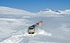

snow
matter

Would you like to link to an existing definition or create a new one? You may check whether a definition exists or add a defintion of this term to Wikipedia and then let us know! so we can add it to the ontology.
Occurs in:
- snow-or-ice__melt_factor
- land_surface_snow__time_integral_of_accumulation_volume_flux
- atmosphere_air_flow_snow~suspended__mass_concentration
- atmosphere_air_flow_snow~suspended__volume_concentration
- atmosphere_snow__mass-per-volume_density
- atmosphere_snow__precipitation_duration
- atmosphere_snow__precipitation_volume_flux
- snow__blowing_speed
- snow__energy-per-area_cold_content
- snow__heat_capacity_ratio
- snow__mass-per-volume_density
- snow__mass-specific_isobaric_heat_capacity
- snow__mass-specific_isochoric_heat_capacity
- snow__temperature
- snow__thermal_conductance
- snow__thermal_conductivity
- snow__thermal_diffusivity
- snow__thermal_inertia
- snow__thermal_resistivity
- snow__volume-specific_isobaric_heat_capacity
- snow__volume-specific_isochoric_heat_capacity
- snowpack__desublimation_mass_flux
- snowpack__desublimation_volume_flux
- snowpack__domain_time_integral_of_desublimation_volume_flux
- snowpack__domain_time_integral_of_sublimation_volume_flux
- snowpack__sublimation_mass_flux
- snowpack__sublimation_volume_flux
- snowpack_snow~new__depth
- snow~wet_rubber__kinetic_friction_coefficient
- snow~wet_rubber__static_friction_coefficient
- snow~wet_ski~waxed__kinetic_friction_coefficient
- snow~wet_ski~waxed__static_friction_coefficient
- land_surface_snow__sublimation_volume_flux
- land_surface_snow__time_integral_of_accumulation_mass_flux
- land_surface_snow__time_integral_of_melt_mass_flux
- land_surface_snow~intercepted__volume-per-area_storage_density